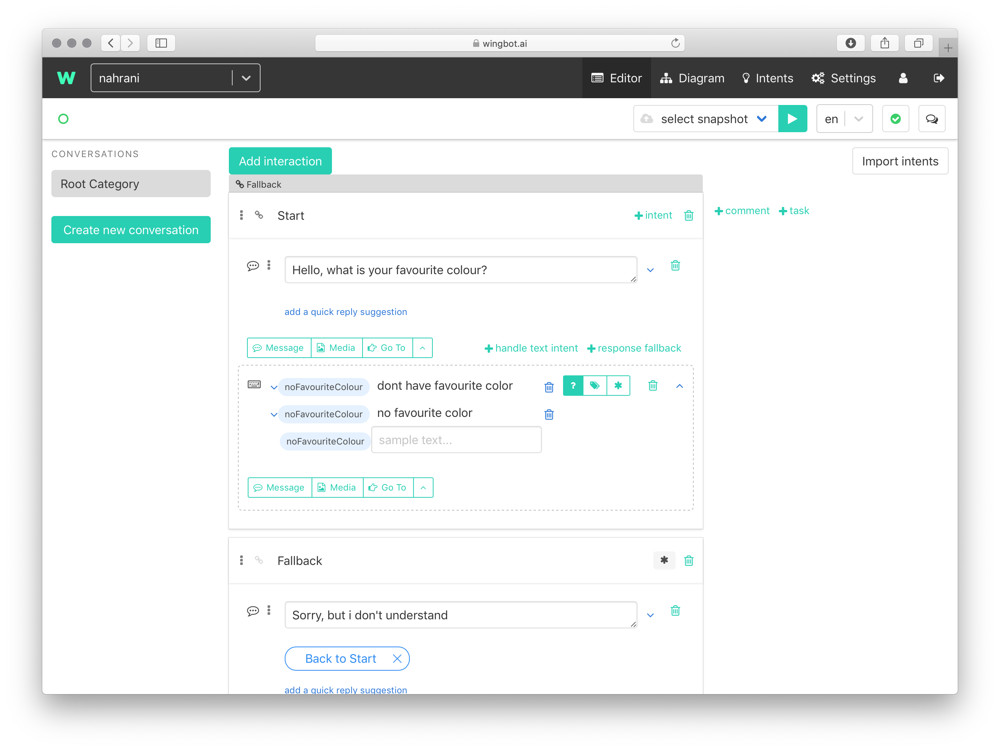
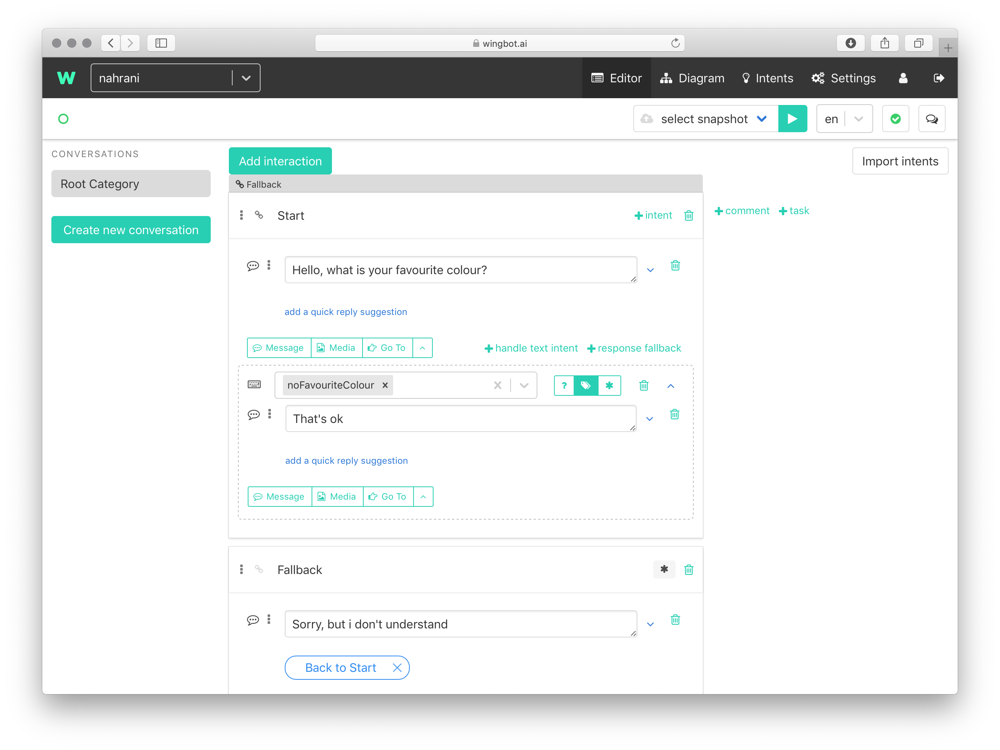

Asking open questions
Open questions makes a conversation more natural and pleasant. There are few tips, how to make it right:
- keep the number of possible responses low
- mind, that intens should have unique message samples - it means you'll have to reuse your intents (like "positive" response)
How the open question look like?

So the user can answer simply:

How to achieve this pattern?
Start with a question without quick replies
- make an open question, which forces user to respond very simply

Add an intent handler with "handle text intent" and specify an intent
- each intent should have a self descriptive name - first specify the name

Add some response samples as a training data
- each response sample should be unique among the all training data
- when there's already an intent mathing your use case, re-use it!

Create a bot's response
- the effect will be better, when the response confirms the bot uderstands

Specify another responses
- you can use "phrases matching" instead of intents - just put a hashtag as a prefix of the intent:
#red

- you can use "phrases matching" instead of intents - just put a hashtag as a prefix of the intent:
OPTIONAL: you can specify a default response - the response fallback
- when there's no matching response, this local fallback will be sent

OPTIONAL: specify more than one intent
- when you'd like to detect more than one intent at once, you can add them!
- toggle the switch from ? to tags icon
- insert all intent names you'd like to use
- you can specify the training data in the "Intents" section